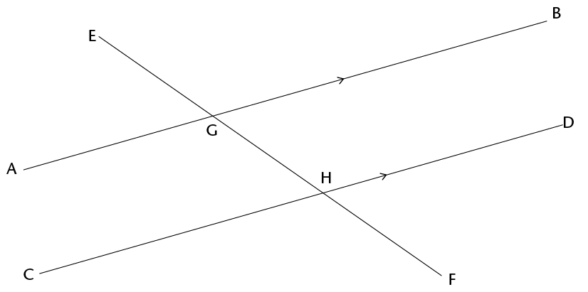

<div class="container">
  <div id="contents" class="col-md-12 main-content"><h1 xmlns="http://www.w3.org/1999/xhtml" id="toc-id-0">Geometry of straight lines</h1>

 <p xmlns="http://www.w3.org/1999/xhtml" class="Body-opener-no-indent">In Grade 8 you identified
    relationships between angles on straight lines. In this
    chapter, you will revise all of the angle relationships and
    write clear descriptions of them.</p>

    <h2 xmlns="http://www.w3.org/1999/xhtml" id="toc-id-1">Angle relationships</h2>

    <p xmlns="http://www.w3.org/1999/xhtml" class="Body-no-indent">Remember that 360\(^\circ\) is one
    full revolution.</p>

    <p xmlns="http://www.w3.org/1999/xhtml" class="Body">If you look at something and then turn all the
    way around so that you are looking at it again, you have turned
    through an angle of 360\(^\circ\). If you turn only halfway
    around, so that you look at something that was right behind
    your back, you have turned through an angle of
    180\(^\circ\).</p>

    <ol xmlns="http://www.w3.org/1999/xhtml">
     
<li class="Body-investigation">Answer the questions about the
    figure below.

    <p class="Body-investigation-hanging"><span></span> </p>
<ol>
    <li class="ques-a-">Is angle \(\hat{FOD}\) in the figure smaller or
    bigger than a right angle?  <hr/></li>
  

    <li class="ques-a-">Is angle \(\hat{FOE}\) in the above figure smaller
    or bigger than a right angle?
    <hr/>
    </li>
</ol>

    <p class="Body-investigation">On the figure above, \(\text{F}\)\(\hat{\text{O}}\)\(\text{D}\) + \(\text{F}\)\(\hat{\text{O}}\)\(\text{C}\)= half of a revolution =
    180\(^\circ\).</p>

    <div class="note">
      <p class="Body-content-no-indent">The sum of the angles on a
      straight line is 180\(^\circ\).</p>

      <p class="Body-content-no-indent">When the sum of angles is
      180\(^\circ\), the angles are called
      <b>supplementary</b>.</p>
    </div>
</li>
    <li class="Body-investigation-hanging"> \(\text{C}\)\(\hat{\text{M}}\)\(\text{A}\)in the figure below is 75\(^\circ\).
    AMB is a straight line.

    <p class="Body-investigation"><span></span></p>
<ol>
    <li class="ques-a--2-space-below">How big is
\(\text{C}\)\(\hat{\text{M}}\)\(\text{B}\)? <hr/></li>
   

    <li class="ques-a-">Why do you say so?<hr/></li>
    
</ol>
</li>
    <li class="Body-investigation">\(\text{P}\)\(\hat{\text{M}}\)\(\text{B}\) in the figure in question 2 is
    40\(^\circ\).
<ol>

    <li class="Body-investigation">How big is
\(\text{C}\)\(\hat{\text{M}}\)\(\text{P}\)?
    <hr/></li>

    <li class="Body-investigation">Explain your reasoning.<hr/>
    </li>
</ol>
</li>
    <li class="Body-investigation-spaced"><p>In the figure below,
    AMB is a straight line and \(\text{A}\)\(\hat{\text{M}}\)\(\text{C}\) and \(\text{B}\)\(\hat{\text{M}}\)\(\text{C}\) are equal angles.</p>

<ol>
    <li class="ques-a--2-space-below">How big are these
    angles?
    <hr/></li>

    <li class="ques-a-">How do you know this?<hr/></li>

</ol>
    <div class="frame-35"></div>
    <hr/>
    
    <div class="note">
      <p class="Body-content-no-indent">When one line forms two
      equal angles where it meets another line, the two lines are
      said to be <b>perpendicular</b>.</p>
      
      <p class="Body-content-no-indent">Because the two equal angles are angles
on a
straight line, their sum is 180°, hence each angle
is 90°.</p>
    </div></li>

    <li class="Body-investigation">In the figure below, lines AB
    and CD intersect at point M.

    <p class="Body-investigation"><span></span></p> 
<div class="aside">
      <p class="Body-box-no-indent">In this chapter, you
      are required to give good reasons for every statement you
      make.</p>
</div>
<ol>
    <li class="ques-a-">Does it look as if \(\text{C}\)\(\hat{\text{M}}\)\(\text{A}\) and \(\text{B}\)\(\hat{\text{M}}\)\(\text{D}\) are equal?
    <hr/></li>

    <li class="ques-a-">Can you explain why they are equal? <hr/></li>
   
  
    <li class="ques-a-">What does \(\text{C}\)\(\hat{\text{M}}\)\(\text{A}\) +
\(\text{D}\)\(\hat{\text{M}}\)\(\text{A}\) equal?<hr/>

    
    <p class="ques-a-">Why do you say so?</p>
    <hr/></li>

    <li class="ques-a-">What is \(\text{C}\)\(\hat{\text{M}}\)\(\text{A}\) +
\(\text{C}\)\(\hat{\text{M}}\)\(\text{B}\)?<hr/>
    

    <p class="ques-a-">Why do you say so?</p>
    <hr/>
</li>
    <li class="ques-a--2-space-below para-style-override-13">Is
    it true that \(\text{C}\)\(\hat{\text{M}}\)\(\text{A}\) +
\(\text{D}\)\(\hat{\text{M}}\)\(\text{A}\)  = 
\(\text{C}\)\(\hat{\text{M}}\)\(\text{A}\) +
\(\text{C}\)\(\hat{\text{M}}\)\(\text{B}\)<hr/></li>
    

    <li class="ques-a--2-space-below"> Which angle occurs on both
    sides of the equation in (e)?<hr/></li>
   
</ol>
</li>
    <li class="Body-investigation-hanging"> Look carefully at your
    answers to questions 5(c) to 5(e).

    <p class="Body-investigation-hanging">Now try to explain your
    observation in question 5(a).</p>
    <hr/></li>
  
    <li class="Body-investigation-hanging">In the figure below,
    AB and CD intersect in M. Four angles are formed. Angle CMB and
    angle AMD are called <b>vertically opposite</b> angles. Angle
    CMA and angle BMD are also <b>vertically opposite</b>.

    <div class="note">
      <p class="Body-content-no-indent">When two straight lines
      intersect, the vertically opposite angles are equal.</p>
    </div>

    <p class="ques-a--2-space-below"><span></span> </p>
<ol>
    <li class="ques-a--2-space-below">If angle BMC =
    125\(^\circ\), how big is angle AMD?
    <hr/></li>

    <li class="ques-a--2-space-below">Why do say so? <hr/></li>
   

</ol></li>
</ol>
    <h3 xmlns="http://www.w3.org/1999/xhtml" class="Head-investigation">Lines and angles</h3>

    <div xmlns="http://www.w3.org/1999/xhtml" class="note">
      <p class="Body-content-no-indent">A line that intersects other
      lines is called a <b>transversal</b>.</p>
    </div>

    <p xmlns="http://www.w3.org/1999/xhtml" class="Body-investigation"><span></span> </p>

    <p xmlns="http://www.w3.org/1999/xhtml" class="Body-investigation">In the above pattern, AB is
    parallel to CD and EF \(||\) GH \(||\) KB
    \(||\) LD.</p>
<ol xmlns="http://www.w3.org/1999/xhtml">
    <li class="Body-investigation-hanging">Angles <i>a</i>, <i>b</i>, <i>c</i>, <i>d</i> and <i>e</i> are <b>corresponding angles</b>. Do the
    corresponding angles look appear to be equal?
    <hr/></li>
  
    <li class="Body-investigation-hanging">Investigate whether
    the corresponding angles are equal by using tracing paper.
    Trace the angle you want to compare to other angles and place
    it on top of the other angle to find out if they are equal.
    What do you notice?<hr/></li>

        <li class="Body-investigation-hanging">Angles <i>f</i>, <i>h</i>, <i>j</i>, <i>m</i> and <i>n</i> are also corresponding angles.
    Identify all the other groups of corresponding angles in the
    pattern. <hr/></li>
   
  
    <li class="Body-investigation-hanging">Describe the position
    of corresponding angles that are formed when a transversal
    intersects other lines.<hr/></li>
    
 

    <li class="Body-investigation-hanging">The following are
    pairs of <b>alternate angles</b>: <i>g</i> and <i>o</i>;
    <i>j</i> and <i>s</i>; and <i>k</i> and <i>r</i>.

    <p class="Body-investigation-hanging">Do these angles appear to
    be equal?</p>
	<hr/></li>
    <li class="Body-investigation-hanging">Investigate whether
    the alternate angles are equal by using tracing paper. Trace
    the angle you want to compare and place it on top of the other
    angle to find out if they are equal. What do you notice? <hr/></li>
   

    <li class="Body-investigation">Identify two more pairs of
    alternate angles.<hr/></li>

       <li class="Body-investigation-hanging">Clearly describe the
    relative position of alternate angles that are formed when a
    transversal intersects other lines.<hr/></li>
    
  
    <li class="Body-investigation-hanging">Did you notice
    something about some of the pairs of corresponding angles when
    you did the investigation in question 6? Describe your
    finding.<hr/></li>
    

    <li class="Body-investigation-hanging">Angles <i>f</i> and <i>o</i>; <i>i</i> and <i>q</i> and <i>k</i> and <i>s</i> are all pairs of
    <b>co-interior angles</b>. Identify three more pairs of
    co-interior angles in the pattern.</li>

</ol>

    

       <div xmlns="http://www.w3.org/1999/xhtml" class="note"><span class="frame-35"></span>
      <p class="Body-content-no-indent">The angles in the same
      relative position at each intersection where a straight line
      crosses two others are called <b>corresponding
      angles</b>.</p>
      <p class="Body-content-no-indent">Angles on different sides of a
transversal and
between two other lines are called <b>alternate angles</b>.
.</p><p class="Body-content-no-indent">Angles on the same side of the
transversal and
between two other lines are called <b>co-interior
angles</b>.
.</p>
      
    </div>

    <h3 xmlns="http://www.w3.org/1999/xhtml" class="Head-investigation">Angles formed by parallel lines</h3>

    <h4 xmlns="http://www.w3.org/1999/xhtml" class="Head-C">Corresponding angles</h4>

    <p xmlns="http://www.w3.org/1999/xhtml" class="Body-no-indent">The lines AB and CD below never meet.
    Lines that never meet and are at a fixed distance from one
    another are called parallel lines. We write AB \(||\)
    CD.</p>

    <div xmlns="http://www.w3.org/1999/xhtml" class="note">
      <p class="Body-content-no-indent">Parallel lines have the
      same direction, i.e. they form <b>equal corresponding
      angles</b> with any line that intersects them.</p>
    </div>

    <p xmlns="http://www.w3.org/1999/xhtml" class="Body-no-indent"><span></span> </p>

    <p xmlns="http://www.w3.org/1999/xhtml" class="Body-no-indent">The line EF cuts AB at G and CD at
    H.</p>

    <p xmlns="http://www.w3.org/1999/xhtml" class="Body-no-indent">EF is a transversal that cuts
    parallel lines AB and CD.</p>

<ol xmlns="http://www.w3.org/1999/xhtml">

    <li class="ques-a-">
	<ol>
	<li>Look carefully at the angles EGA and
    EHC in the above figure. They are called <span class="Body-bold char-style-override-3"><b>corresponding angles</b></span>.
    Do they appear to be equal?
    <hr/></li>

    <li class="ques-a-">Measure the two angles to check whether
    they are equal. What do you notice? <hr/></li>
   
</ol></li>

    <li class="Body-investigation-hanging">Suppose \(\text{E}\)\(\hat{\text{G}}\)\(\text{A}\) and \(\text{E}\)\(\hat{\text{H}}\)\(\text{C}\) are really equal. Would \(\text{E}\)\(\hat{\text{G}}\)\(\text{B}\) and \(\text{E}\)\(\hat{\text{H}}\)\(\text{D}\) then also be equal? Give reasons to
    support your answer.  <hr/>
   


    <div class="note">
      <p class="Body-content-no-indent">When two parallel lines are
      cut by a transversal, the corresponding angles are equal.</p>
    </div>
</li> </ol>
 
    <h4 xmlns="http://www.w3.org/1999/xhtml">Alternate angles</h4>

    <p xmlns="http://www.w3.org/1999/xhtml" class="Body-no-indent">The angles \(\text{B}\)\(\hat{\text{G}}\)\(\text{F}\) and \(\text{C}\)\(\hat{\text{H}}\)\(\text{E}\) below are called <b>alternate
    angles</b>. They are on opposite sides of the transversal.</p>

    <p xmlns="http://www.w3.org/1999/xhtml" class="No-Paragraph-Style para-style-override-28">
    <span></span> </p>
 <ol xmlns="http://www.w3.org/1999/xhtml">
    <li class="Body-investigation" value="3">Do you think angles AGF and
    DHE should also be called alternate angles? <hr/></li>
 
    <li class="Body-investigation-hanging">Do you think alternate
    angles are equal? Investigate by using the tracing paper like
    you did previously, or measure the angles accurately with your
    protractor.What do you notice?  <hr/>

   
  
   
    <div class="note">
      <p class="Body-content-no-indent">When parallel lines are cut
      by a transversal, the alternate angles are equal.</p>
    </div>
</li>
    <li class="Body-investigation-hanging">Try to explain why
    alternate angles are equal when the lines that are cut by a
    transversal are parallel, keeping in mind that corresponding
    angles are equal.  <hr/> 
    <p class="Body-no-indent">By answering the
following questions,
    you should be able to see how you can explain why alternate
    angles are equal when parallel lines are cut by a
    transversal.</p></li>
 
    <li class="Body-investigation-hanging">Are angles
\(\text{B}\)\(\hat{\text{G}}\)\(\text{H}\) and
\(\text{D}\)\(\hat{\text{H}}\)\(\text{F}\) in the figure corresponding angles?
    <hr/>

    <p class="Body-investigation-hanging">What do you know about
    corresponding angles?</p>
    <hr/>
   
    <p class="ques-a-"><span></span> </p>
</li>
    <li class="ques-a-">
<ol>
<li>What can you say about \(\text{B}\)\(\hat{\text{G}}\)\(\text{H}\) + \(\text{A}\)\(\hat{\text{G}}\)\(\text{H}\) Give a reason.<hr/>
</li>
  
    <li class="ques-a-"> What can you say about
\(\text{D}\)\(\hat{\text{H}}\)\(\text{G}\) +
\(\text{C}\)\(\hat{\text{H}}\)\(\text{G}\)? Give a reason. <hr/></li>
   

    <li class="ques-a-">Is it true that
\(\text{B}\)\(\hat{\text{G}}\)\(\text{H}\) +
\(\text{A}\)\(\hat{\text{G}}\)\(\text{H}\) =
\(\text{D}\)\(\hat{\text{H}}\)\(\text{G}\) +
\(\text{C}\)\(\hat{\text{H}}\)\(\text{G}\)? Explain.<hr/></li>
    

    <li class="ques-a-">Will the equation in (c) still be true
    if you replace angle \(\text{B}\)\(\hat{\text{G}}\)\(\text{H}\) on the
left-hand side with angle \(\text{C}\)\(\hat{\text{H}}\)\(\text{G}\)? <hr/></li>

</ol>   
 </li> 
    
    <li class="Body-investigation-hanging">Look carefully at your
    work in question 7 and write an explanation why alternate
    angles are equal, when two parallel lines are cut by a
    transversal.<hr/>
  
   
    <h4 class="Head-C">Co-interior angles</h4>

    <p class="Body-no-indent para-style-override-7">The angles \(\text{A}\)\(\hat{\text{G}}\)\(\text{H}\) and \(\text{C}\)\(\hat{\text{H}}\)\(\text{G}\) in the figure below are called
    <b>co-interior angles</b>.</p>

    <div class="aside">
      <p class="Body-box-no-indent">"co-" means together.</p>

      <p class="Body-box-no-indent">"co-interior" means on the same
      side.</p>
    </div>

    <p class="Body-no-indent para-style-override-7">They are on the
    same side of the transversal.</p>

    <p class="Body"><span></span> </p>
  </li>
    <li class="ques-a-">
<ol>
<li> What do you know about \(\text{C}\)\(\hat{\text{H}}\)\(\text{G}\) +
\(\text{D}\)\(\hat{\text{H}}\)\(\text{G}\)? Explain.<hr/>
    
   </li>

    <li class="ques-a-">What do you know about
\(\text{B}\)\(\hat{\text{G}}\)\(\text{H}\) +
\(\text{A}\)\(\hat{\text{G}}\)\(\text{H}\)? Explain.<hr/>
    
   </li>

    <li class="ques-a-">What do you know about
\(\text{B}\)\(\hat{\text{G}}\)\(\text{H}\)+
\(\text{C}\)\(\hat{\text{H}}\)\(\text{G}\)? Explain.<hr/>

   </li>

    <li class="ques-a-">What conclusion can you draw about
\(\text{A}\)\(\hat{\text{G}}\)\(\text{H}\) +
\(\text{C}\)\(\hat{\text{H}}\)\(\text{G}\)?


  Give detailed reasons for your
    conclusion.   <hr/></li>
 

</ol></li>
</ol>
    <div xmlns="http://www.w3.org/1999/xhtml" class="note">
      <p class="Body-content-no-indent">When two parallel lines are
      cut by a transversal, the sum of two co-interior angles is
      180\(^\circ\). Another way of saying this is to say that the two co-interior angles are <b>supplementary.</b></p>
    </div>

    <h2 xmlns="http://www.w3.org/1999/xhtml" id="toc-id-2">Identify and name angles</h2>

<ol xmlns="http://www.w3.org/1999/xhtml">
    <li class="Body-investigation">In the figure below, the line
    RF is perpendicular to AB.
	
    <p class="Body-investigation"><span></span> </p>
<ol>
    <li class="ques-a-">Is RF also perpendicular to CD? Justify
    your answer. <hr/></li>
   
    
    <li class="ques-a-"> Name four pairs of supplementary angles
    in the figure. In each case say how you know that the angles
    are supplementary. <hr/></li>
   
   
    <li class="ques-a-"> Name four pairs of co-interior angles in
    the figure.<hr/>
</li>
    
    <li class="ques-a-"> Name four pairs of corresponding angles
    in the figure. <hr/></li>
   
   
    <li class="ques-a-"> Name four pairs of alternate angles in
    the figure.   <hr/></li>
 

</ol></li>

    <li class="Body-investigation">Now you are given that AB and
    CD in the figure below are parallel.<span></span>
<ol>
    <li class="ques-a-">If it is also given that RF is
    perpendicular to AB, will RF also be perpendicular to CD?
    Justify your answer.<hr/></li>
    
 
    <li class="ques-a-">Name all pairs of supplementary angles
    in the figure. In each case say how you know that the angles
    are supplementary.<hr/></li>
    
   
    <li class="ques-a-">Suppose \(\text{E}\)\(\hat{\text{G}}\)\(\text{A}\)  = <span class="char-style-override-9">x</span>. Give the size of as many
    angles in the figure as you can, in terms of <span class="char-style-override-9">x</span>. Each time give a reason for
    your answer.<hr/></li>


 </ol>   

   </li></ol>
    <h2 xmlns="http://www.w3.org/1999/xhtml" id="toc-id-3">Solving problems</h2>
<ol xmlns="http://www.w3.org/1999/xhtml">
    <li class="Body-investigation-hanging">Line segments AB and
    CD in the figure below are parallel. EF and IJ are also
    parallel. Mark these facts on the figure, and then answer the
    questions.

    <div class="aside">
      <p class="Body-box-no-indent">When you solve problems in
      geometry you can use a shorthand way to write your reasons.
      For example, if two angles are equal because they are
      corresponding angles, then you can write (corr <span class="char-style-override-24">\(\angle\)</span>s, AB
      \(||\) CD) as the reason.</p>
    </div>

    <p class="Body-investigation-hanging"><span></span> </p>
<ol>
    <li class="ques-a-">Name five angles in the figure that are
    equal to \(\text{G}\)\(\hat{\text{H}}\)\(\text{D}\) . Give a reason for each of your
    answers.<hr/></li>
    
   
    <li class="ques-a-">Name all the angles in the figure that
    are equal to \(\text{A}\)\(\hat{\text{G}}\)\(\text{H}\) . Give a reason for each of your
    answers.<hr/></li>


</ol>
  </li>  
  
    <li class="Body-investigation-hanging">AB and CD in the
    figure below are parallel. EF and IJ are also parallel.
\(\text{N}\)\(\hat{\text{M}}\)\(\text{B}\)  = 80\(^\circ\) and
\(\text{J}\)\(\hat{\text{L}}\)\(\text{F}\)  = 40\(^\circ\).

    <p class="Body"><span></span> </p>

    <p class="ques-a-">Find the sizes of as many angles in the
    figure as you can, giving reasons.</p>
    <hr/></li>
  
    <li class="Body-investigation-hanging">In the figure below,
    AB \(||\) CD; EF \(||\) AB; JR
    \(||\) GH. You are also given that \(\text{P}\)\(\hat{\text{M}}\)\(\text{N}\)  = 60\(^\circ\), \(\text{R}\)\(\hat{\text{N}}\)\(\text{D}\)  = 50\(^\circ\).

<ol>
 

    <li class="ques-a-">Find the sizes of as many angles in the
    figure as you can, giving reasons. <hr/>   <p class="Body&#10;para-style-override-22"><span></span> </p></li>
    <li class="ques-a-">Are EF and CD parallel? Give reasons for
    your answers. <hr/></li>
  </ol>
</li>
</ol>
  </div>
</div>